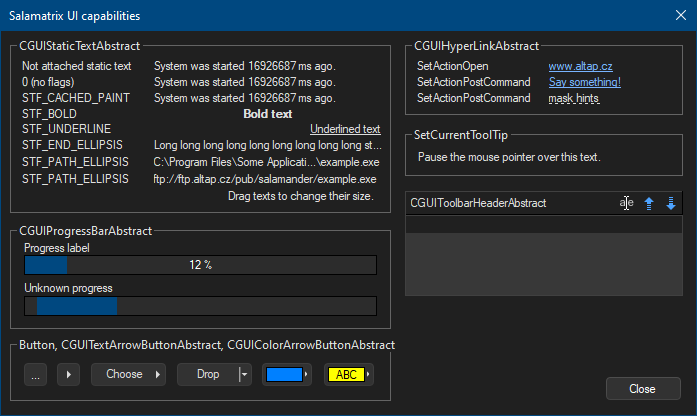
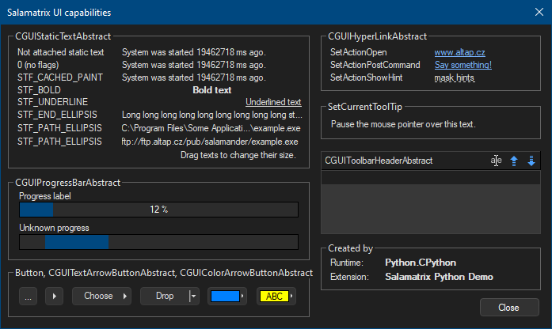
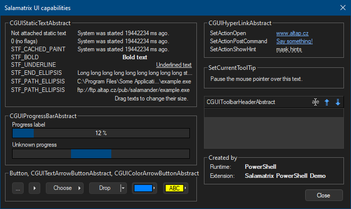
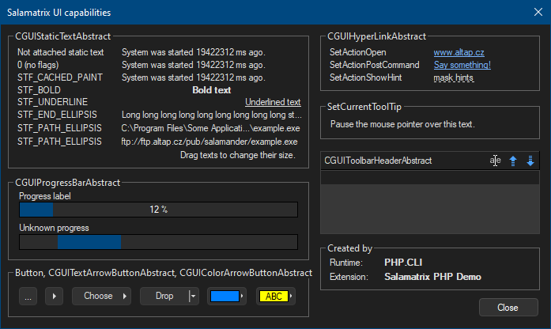
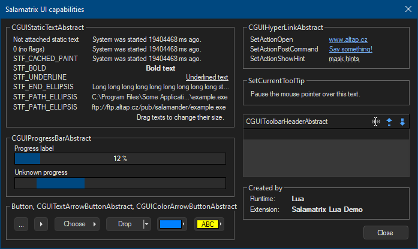
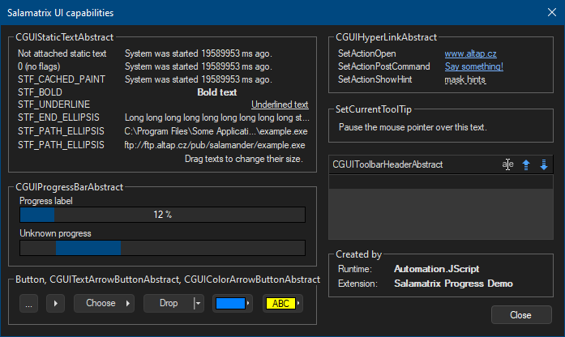
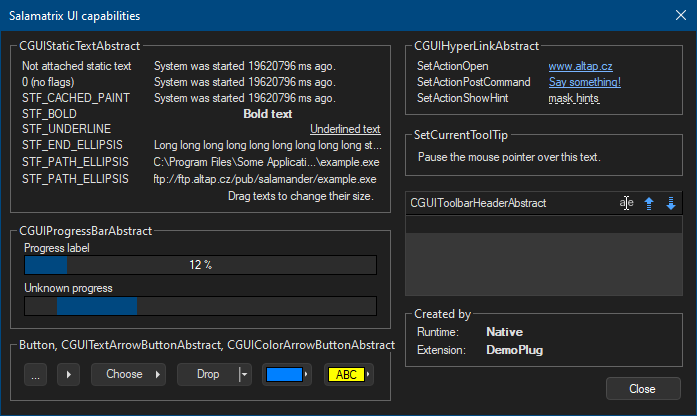

labelCaption textOne native UI service · seven caller surfaces
Build the window in your language. Let Salamander make it native.
Salamatrix.UI is the framework-owned dialog and control layer for Open Salamander extensions. Node, Python, PowerShell, PHP, Lua, Automation JScript, and native C++ all describe the same controls and receive the same native window.
Dark mode, current Salamander colors, DPI scaling, keyboard traversal, host controls, accessibility metadata, validation, and cleanup stay inside Salamatrix. A runtime provider never needs its own GUI toolkit.

Framework ownership, not a prebuilt gallery
The capabilities window is both a gallery and real extension source. Every bundled demo creates the dialog, adds every control, sets every native property, shows it, and destroys it. The old shortcut that merely opened a framework-owned showcase is not used by these demos.
Extension sourceNode · Python · PowerShell · PHP · Lua
SMX1Salamatrix package hostDialog IDs · ownership · events · cleanup
ABINativeDialogOpen Salamander controls · DPI · dark mode
Automation JScript uses a thin COM facade over the same service. DemoPlug queries SALAMATRIX_SERVICE_UI and uses IDialog/IControl directly. The concrete window still lives in Salamatrix in both cases.
The native control catalog
statictextHost styled text, ellipsis, notifytextboxEditable, read-only, multilinecheckboxBoolean choiceradioExclusive choicecomboboxDrop-down item selectionbuttonAction and dialog resultlistviewColumns, rows, native list stylestreeviewHierarchical itemstabcontrolTabs and selected indexfolderpickerEditable path and folder browserfilepickerOpen/save dialog and filtergroupboxCaptioned visual groupinghyperlinkOpen, post command, show hintprogressbarKnown, 64-bit, indeterminatearrowbuttonCompact arrow actiontextarrowbuttonText with arrow/drop-downcolorarrowbuttonColor sample and texttoolbarheaderModify/up/down list headerOne option vocabulary
All five workers forward the same fields: readOnly, checked, dialogResult, keepOpen, multiline, filter, save, styleFlags, pathSeparator, toolTip, actionOpen, actionCommand, actionHint, progress values/timing/text, colors, and toolbar-header alignment/masks.
One layout, independently constructed
The common dialog is 463 × 236. Its lower-right Created by group proves which caller assembled it:
JSJavaScript / Node
Async facade; create first, then await every host operation.
JavaScript / Node
Async facade; create first, then await every host operation.
Node.js script source code example:
// Build the complete gallery here, through the public runtime-neutral API.
const dialog = await Salamander.ui.dialog(
"Salamatrix UI capabilities", { width: 463, height: 236 }).create();
const add = (kind, id, text, x, y, width, height, options = {}) =>
dialog.addControl(kind, id, text, { x, y, width, height }, options);
const uptime = `System was started ${await Salamander.ui.uptime()} ms ago.`;
await add("groupbox", "static-group", "CGUIStaticTextAbstract", 6, 4, 254, 108);
await add("label", "not-attached-label", "Not attached static text", 14, 17, 80, 8);
await add("label", "uptime-plain", uptime, 102, 17, 152, 8);
const rows = [
["static-none", "0 (no flags)", uptime, 27, 0],
["static-cache", "STF_CACHED_PAINT", uptime, 37, 1],
["static-bold", "STF_BOLD", "Bold &text", 47, 0x10082],
["static-underline", "STF_UNDERLINE", "Underlined text", 56, 0x20004],
["static-end", "STF_END_ELLIPSIS", "Long long long long long long long long long string.", 66, 0x20],
["static-path", "STF_PATH_ELLIPSIS", "C:\\Program Files\\Some Application With Long Path\\example.exe", 76, 0x40],
["static-path-url", "STF_PATH_ELLIPSIS", "ftp://ftp.altap.cz/pub/salamander/example.exe", 87, 0x40],
];
for (const [id, caption, value, y, styleFlags] of rows) {
await add("label", `${id}-label`, caption, 14, y, 75, 8);
await add("statictext", id, value, 102, y, 152, 8,
{ styleFlags, ...(id === "static-path-url" ? { pathSeparator: "/" } : {}) });
}
await add("label", "drag-hint", "Drag texts to change their size.", 151, 97, 103, 8);
await add("groupbox", "progress-group", "CGUIProgressBarAbstract", 6, 118, 254, 66);
await add("label", "progress-label", "Progress label", 15, 129, 60, 8);
await add("progressbar", "progress", "", 15, 138, 235, 12, { progress: 120 });
await add("label", "unknown-label", "Unknown progress", 15, 154, 67, 8);
await add("progressbar", "unknown-progress", "", 15, 163, 235, 12,
{ progress: -1, indeterminateDuration: -1, indeterminateInterval: 100 });
await add("groupbox", "buttons-group", "Button, CGUITextArrowButtonAbstract, CGUIColorArrowButtonAbstract", 6, 188, 254, 40);
await add("button", "more", "...", 15, 204, 15, 14, { keepOpen: true });
await add("arrowbutton", "arrow", "", 37, 204, 15, 14);
await add("textarrowbutton", "choose", "&Choose", 60, 204, 50, 14, { styleFlags: 8 });
await add("textarrowbutton", "drop", "&Drop", 117, 204, 50, 14, { styleFlags: 2 });
await add("colorarrowbutton", "color", "", 174, 204, 33, 14, { textColor: 0xff8000, backgroundColor: 0xff8000 });
await add("colorarrowbutton", "color-text", "ABC", 215, 204, 33, 14, { textColor: 0, backgroundColor: 0xffff });
await add("groupbox", "hyperlink-group", "CGUIHyperLinkAbstract", 269, 4, 185, 48);
await add("label", "open-label", "SetActionOpen", 277, 17, 75, 8);
await add("hyperlink", "open-link", "www.altap.cz", 365, 17, 47, 8, { styleFlags: 0x14, actionOpen: "https://www.altap.cz" });
await add("label", "command-label", "SetActionPostCommand", 277, 27, 81, 8);
await add("hyperlink", "command-link", "Say something!", 365, 27, 55, 8, { styleFlags: 0x14, actionCommand: 0x7f01 });
await add("label", "hint-label", "SetActionShowHint", 277, 37, 81, 8);
await add("hyperlink", "hint-link", "mask hints", 365, 37, 40, 8, { styleFlags: 8, actionHint: "text 1 text 1 text 1 text 1\ntext 2 text 2 text 2" });
await add("groupbox", "tooltip-group", "SetCurrentToolTip", 269, 59, 185, 31);
await add("statictext", "tooltip", "Pause the mouse pointer over this text.", 278, 73, 130, 8, { styleFlags: 0x40000, toolTip: "ToolTip" });
await add("listview", "header-list", "", 269, 113, 185, 50, { styleFlags: 0x01e00000 });
await add("toolbarheader", "toolbar-header", "CGUIToolbarHeaderAbstract", 269, 102, 96, 8, { alignControlId: "header-list", buttonMask: 0x31 });
await add("groupbox", "origin-group", "Created by", 269, 169, 185, 38);
await add("label", "runtime-label", "Runtime:", 277, 181, 42, 8);
await add("statictext", "runtime-value", "JavaScript.Node", 323, 181, 122, 8, { styleFlags: 2 });
await add("label", "extension-label", "Extension:", 277, 192, 42, 8);
await add("statictext", "extension-value", "Salamatrix Node Demo", 323, 192, 122, 8, { styleFlags: 2 });
await add("button", "close", "Close", 403, 213, 50, 14, { dialogResult: 1, styleFlags: 0x100000 });
try { await dialog.show(); } finally { await dialog.close(); }
}
PYPython
Synchronous facade with a Python options dictionary.
Python
Synchronous facade with a Python options dictionary.

Python script source code example:
# Build the complete gallery here, through the public runtime-neutral API.
dialog = Salamander.ui.dialog("Salamatrix UI capabilities", 463, 236)
def add(kind, control_id, text, x, y, width, height, **options):
dialog.add_control(kind, control_id, text,
layout={"x": x, "y": y, "width": width, "height": height},
options=options)
uptime = f"System was started {Salamander.ui.uptime()} ms ago."
add("groupbox", "static-group", "CGUIStaticTextAbstract", 6, 4, 254, 108)
add("label", "not-attached-label", "Not attached static text", 14, 17, 80, 8)
add("label", "uptime-plain", uptime, 102, 17, 152, 8)
rows = [
("static-none", "0 (no flags)", uptime, 27, 0),
("static-cache", "STF_CACHED_PAINT", uptime, 37, 1),
("static-bold", "STF_BOLD", "Bold &text", 47, 0x10082),
("static-underline", "STF_UNDERLINE", "Underlined text", 56, 0x20004),
("static-end", "STF_END_ELLIPSIS", "Long long long long long long long long long string.", 66, 0x20),
("static-path", "STF_PATH_ELLIPSIS", r"C:\Program Files\Some Application With Long Path\example.exe", 76, 0x40),
("static-path-url", "STF_PATH_ELLIPSIS", "ftp://ftp.altap.cz/pub/salamander/example.exe", 87, 0x40),
]
for control_id, caption, value, y, flags in rows:
add("label", control_id + "-label", caption, 14, y, 75, 8)
extra = {"styleFlags": flags}
if control_id == "static-path-url": extra["pathSeparator"] = "/"
add("statictext", control_id, value, 102, y, 152, 8, **extra)
add("label", "drag-hint", "Drag texts to change their size.", 151, 97, 103, 8)
add("groupbox", "progress-group", "CGUIProgressBarAbstract", 6, 118, 254, 66)
add("label", "progress-label", "Progress label", 15, 129, 60, 8)
add("progressbar", "progress", "", 15, 138, 235, 12, progress=120)
add("label", "unknown-label", "Unknown progress", 15, 154, 67, 8)
add("progressbar", "unknown-progress", "", 15, 163, 235, 12, progress=-1, indeterminateDuration=-1, indeterminateInterval=100)
add("groupbox", "buttons-group", "Button, CGUITextArrowButtonAbstract, CGUIColorArrowButtonAbstract", 6, 188, 254, 40)
add("button", "more", "...", 15, 204, 15, 14, keepOpen=True)
add("arrowbutton", "arrow", "", 37, 204, 15, 14)
add("textarrowbutton", "choose", "&Choose", 60, 204, 50, 14, styleFlags=8)
add("textarrowbutton", "drop", "&Drop", 117, 204, 50, 14, styleFlags=2)
add("colorarrowbutton", "color", "", 174, 204, 33, 14, textColor=0xff8000, backgroundColor=0xff8000)
add("colorarrowbutton", "color-text", "ABC", 215, 204, 33, 14, textColor=0, backgroundColor=0xffff)
add("groupbox", "hyperlink-group", "CGUIHyperLinkAbstract", 269, 4, 185, 48)
add("label", "open-label", "SetActionOpen", 277, 17, 75, 8)
add("hyperlink", "open-link", "www.altap.cz", 365, 17, 47, 8, styleFlags=0x14, actionOpen="https://www.altap.cz")
add("label", "command-label", "SetActionPostCommand", 277, 27, 81, 8)
add("hyperlink", "command-link", "Say something!", 365, 27, 55, 8, styleFlags=0x14, actionCommand=0x7f01)
add("label", "hint-label", "SetActionShowHint", 277, 37, 81, 8)
add("hyperlink", "hint-link", "mask hints", 365, 37, 40, 8, styleFlags=8, actionHint="text 1 text 1 text 1 text 1\ntext 2 text 2 text 2")
add("groupbox", "tooltip-group", "SetCurrentToolTip", 269, 59, 185, 31)
add("statictext", "tooltip", "Pause the mouse pointer over this text.", 278, 73, 130, 8, styleFlags=0x40000, toolTip="ToolTip")
add("listview", "header-list", "", 269, 113, 185, 50, styleFlags=0x01e00000)
add("toolbarheader", "toolbar-header", "CGUIToolbarHeaderAbstract", 269, 102, 96, 8, alignControlId="header-list", buttonMask=0x31)
add("groupbox", "origin-group", "Created by", 269, 169, 185, 38)
add("label", "runtime-label", "Runtime:", 277, 181, 42, 8)
add("statictext", "runtime-value", "Python.CPython", 323, 181, 122, 8, styleFlags=2)
add("label", "extension-label", "Extension:", 277, 192, 42, 8)
add("statictext", "extension-value", "Salamatrix Python Demo", 323, 192, 122, 8, styleFlags=2)
add("button", "close", "Close", 403, 213, 50, 14, dialogResult=1, styleFlags=0x100000)
try:
dialog.show()
finally:
dialog.close()PSPowerShell
Layout and extended properties are ordinary hashtables.
PowerShell
Layout and extended properties are ordinary hashtables.

PowerShell script source code example:
# Build the complete gallery here, through the public runtime-neutral API.
$dialog = $Salamander.ui.Dialog('Salamatrix UI capabilities', 463, 236)
function Add-CapabilityControl($kind, $id, $text, $x, $y, $width, $height, $options = @{}) {
$dialog.AddControl($kind, $id, $text, $false, $false, 0,
@{x=$x; y=$y; width=$width; height=$height}, $false, $false, $options)
}
$uptime = "System was started $($Salamander.ui.Uptime()) ms ago."
Add-CapabilityControl groupbox static-group 'CGUIStaticTextAbstract' 6 4 254 108
Add-CapabilityControl label not-attached-label 'Not attached static text' 14 17 80 8
Add-CapabilityControl label uptime-plain $uptime 102 17 152 8
$rows = @(
@('static-none','0 (no flags)',$uptime,27,0),
@('static-cache','STF_CACHED_PAINT',$uptime,37,1),
@('static-bold','STF_BOLD','Bold &text',47,0x10082),
@('static-underline','STF_UNDERLINE','Underlined text',56,0x20004),
@('static-end','STF_END_ELLIPSIS','Long long long long long long long long long string.',66,0x20),
@('static-path','STF_PATH_ELLIPSIS','C:\Program Files\Some Application With Long Path\example.exe',76,0x40),
@('static-path-url','STF_PATH_ELLIPSIS','ftp://ftp.altap.cz/pub/salamander/example.exe',87,0x40))
foreach ($row in $rows) {
Add-CapabilityControl label "$($row[0])-label" $row[1] 14 $row[3] 75 8
$extra = @{styleFlags=$row[4]}; if ($row[0] -eq 'static-path-url') { $extra.pathSeparator='/' }
Add-CapabilityControl statictext $row[0] $row[2] 102 $row[3] 152 8 $extra
}
Add-CapabilityControl label drag-hint 'Drag texts to change their size.' 151 97 103 8
Add-CapabilityControl groupbox progress-group 'CGUIProgressBarAbstract' 6 118 254 66
Add-CapabilityControl label progress-label 'Progress label' 15 129 60 8
Add-CapabilityControl progressbar progress '' 15 138 235 12 @{progress=120}
Add-CapabilityControl label unknown-label 'Unknown progress' 15 154 67 8
Add-CapabilityControl progressbar unknown-progress '' 15 163 235 12 @{progress=-1;indeterminateDuration=-1;indeterminateInterval=100}
Add-CapabilityControl groupbox buttons-group 'Button, CGUITextArrowButtonAbstract, CGUIColorArrowButtonAbstract' 6 188 254 40
Add-CapabilityControl button more '...' 15 204 15 14 @{keepOpen=$true}
Add-CapabilityControl arrowbutton arrow '' 37 204 15 14
Add-CapabilityControl textarrowbutton choose '&Choose' 60 204 50 14 @{styleFlags=8}
Add-CapabilityControl textarrowbutton drop '&Drop' 117 204 50 14 @{styleFlags=2}
Add-CapabilityControl colorarrowbutton color '' 174 204 33 14 @{textColor=0xff8000;backgroundColor=0xff8000}
Add-CapabilityControl colorarrowbutton color-text ABC 215 204 33 14 @{textColor=0;backgroundColor=0xffff}
Add-CapabilityControl groupbox hyperlink-group CGUIHyperLinkAbstract 269 4 185 48
Add-CapabilityControl label open-label SetActionOpen 277 17 75 8
Add-CapabilityControl hyperlink open-link www.altap.cz 365 17 47 8 @{styleFlags=0x14;actionOpen='https://www.altap.cz'}
Add-CapabilityControl label command-label SetActionPostCommand 277 27 81 8
Add-CapabilityControl hyperlink command-link 'Say something!' 365 27 55 8 @{styleFlags=0x14;actionCommand=0x7f01}
Add-CapabilityControl label hint-label SetActionShowHint 277 37 81 8
Add-CapabilityControl hyperlink hint-link 'mask hints' 365 37 40 8 @{styleFlags=8;actionHint="text 1 text 1 text 1 text 1`ntext 2 text 2 text 2"}
Add-CapabilityControl groupbox tooltip-group SetCurrentToolTip 269 59 185 31
Add-CapabilityControl statictext tooltip 'Pause the mouse pointer over this text.' 278 73 130 8 @{styleFlags=0x40000;toolTip='ToolTip'}
Add-CapabilityControl listview header-list '' 269 113 185 50 @{styleFlags=0x01e00000}
Add-CapabilityControl toolbarheader toolbar-header CGUIToolbarHeaderAbstract 269 102 96 8 @{alignControlId='header-list';buttonMask=0x31}
Add-CapabilityControl groupbox origin-group 'Created by' 269 169 185 38
Add-CapabilityControl label runtime-label 'Runtime:' 277 181 42 8
Add-CapabilityControl statictext runtime-value PowerShell 323 181 122 8 @{styleFlags=2}
Add-CapabilityControl label extension-label 'Extension:' 277 192 42 8
Add-CapabilityControl statictext extension-value 'Salamatrix PowerShell Demo' 323 192 122 8 @{styleFlags=2}
Add-CapabilityControl button close Close 403 213 50 14 @{dialogResult=1;styleFlags=0x100000}
try { [void]$dialog.Show() } finally { $dialog.Close() }
}PHPPHP
The last argument is the common extended option map.
PHP
The last argument is the common extended option map.

PHP script source code example:
<?php
// Build the complete gallery here, through the public runtime-neutral API.
$dialog = $Salamander->ui->dialog('Salamatrix UI capabilities', 463, 236);
$add = function ($kind, $id, $text, $x, $y, $width, $height, $options = array()) use ($dialog) {
$dialog->addControl($kind, $id, $text, false, false, 0,
array('x'=>$x, 'y'=>$y, 'width'=>$width, 'height'=>$height), false, false, $options);
};
$uptime = 'System was started ' . $Salamander->ui->uptime() . ' ms ago.';
$add('groupbox','static-group','CGUIStaticTextAbstract',6,4,254,108);
$add('label','not-attached-label','Not attached static text',14,17,80,8);
$add('label','uptime-plain',$uptime,102,17,152,8);
$rows = array(
array('static-none','0 (no flags)',$uptime,27,0),
array('static-cache','STF_CACHED_PAINT',$uptime,37,1),
array('static-bold','STF_BOLD','Bold &text',47,0x10082),
array('static-underline','STF_UNDERLINE','Underlined text',56,0x20004),
array('static-end','STF_END_ELLIPSIS','Long long long long long long long long long string.',66,0x20),
array('static-path','STF_PATH_ELLIPSIS','C:\\Program Files\\Some Application With Long Path\\example.exe',76,0x40),
array('static-path-url','STF_PATH_ELLIPSIS','ftp://ftp.altap.cz/pub/salamander/example.exe',87,0x40));
foreach ($rows as $row) {
$add('label',$row[0].'-label',$row[1],14,$row[3],75,8);
$extra = array('styleFlags'=>$row[4]);
if ($row[0] === 'static-path-url') $extra['pathSeparator'] = '/';
$add('statictext',$row[0],$row[2],102,$row[3],152,8,$extra);
}
$add('label','drag-hint','Drag texts to change their size.',151,97,103,8);
$add('groupbox','progress-group','CGUIProgressBarAbstract',6,118,254,66);
$add('label','progress-label','Progress label',15,129,60,8);
$add('progressbar','progress','',15,138,235,12,array('progress'=>120));
$add('label','unknown-label','Unknown progress',15,154,67,8);
$add('progressbar','unknown-progress','',15,163,235,12,array('progress'=>-1,'indeterminateDuration'=>-1,'indeterminateInterval'=>100));
$add('groupbox','buttons-group','Button, CGUITextArrowButtonAbstract, CGUIColorArrowButtonAbstract',6,188,254,40);
$add('button','more','...',15,204,15,14,array('keepOpen'=>true));
$add('arrowbutton','arrow','',37,204,15,14);
$add('textarrowbutton','choose','&Choose',60,204,50,14,array('styleFlags'=>8));
$add('textarrowbutton','drop','&Drop',117,204,50,14,array('styleFlags'=>2));
$add('colorarrowbutton','color','',174,204,33,14,array('textColor'=>0xff8000,'backgroundColor'=>0xff8000));
$add('colorarrowbutton','color-text','ABC',215,204,33,14,array('textColor'=>0,'backgroundColor'=>0xffff));
$add('groupbox','hyperlink-group','CGUIHyperLinkAbstract',269,4,185,48);
$add('label','open-label','SetActionOpen',277,17,75,8);
$add('hyperlink','open-link','www.altap.cz',365,17,47,8,array('styleFlags'=>0x14,'actionOpen'=>'https://www.altap.cz'));
$add('label','command-label','SetActionPostCommand',277,27,81,8);
$add('hyperlink','command-link','Say something!',365,27,55,8,array('styleFlags'=>0x14,'actionCommand'=>0x7f01));
$add('label','hint-label','SetActionShowHint',277,37,81,8);
$add('hyperlink','hint-link','mask hints',365,37,40,8,array('styleFlags'=>8,'actionHint'=>"text 1 text 1 text 1 text 1\ntext 2 text 2 text 2"));
$add('groupbox','tooltip-group','SetCurrentToolTip',269,59,185,31);
$add('statictext','tooltip','Pause the mouse pointer over this text.',278,73,130,8,array('styleFlags'=>0x40000,'toolTip'=>'ToolTip'));
$add('listview','header-list','',269,113,185,50,array('styleFlags'=>0x01e00000));
$add('toolbarheader','toolbar-header','CGUIToolbarHeaderAbstract',269,102,96,8,array('alignControlId'=>'header-list','buttonMask'=>0x31));
$add('groupbox','origin-group','Created by',269,169,185,38);
$add('label','runtime-label','Runtime:',277,181,42,8);
$add('statictext','runtime-value','PHP.CLI',323,181,122,8,array('styleFlags'=>2));
$add('label','extension-label','Extension:',277,192,42,8);
$add('statictext','extension-value','Salamatrix PHP Demo',323,192,122,8,array('styleFlags'=>2));
$add('button','close','Close',403,213,50,14,array('dialogResult'=>1,'styleFlags'=>0x100000));
try { $dialog->show(); } finally { $dialog->close(); }
}LUALua
Snake-case options map to the same SMX1 payload.
Lua
Snake-case options map to the same SMX1 payload.

LUA script source code example:
-- Build the complete gallery here, through the public runtime-neutral API.
local dialog = Salamander.ui.dialog("Salamatrix UI capabilities", 463, 236)
local function add(kind, id, text, x, y, width, height, options)
options = options or {}; options.x=x; options.y=y
options.width=width; options.height=height
dialog.add_control(kind, id, text, options)
end
local uptime = "System was started " .. Salamander.ui.uptime() .. " ms ago."
add("groupbox","static-group","CGUIStaticTextAbstract",6,4,254,108)
add("label","not-attached-label","Not attached static text",14,17,80,8)
add("label","uptime-plain",uptime,102,17,152,8)
local rows = {
{"static-none","0 (no flags)",uptime,27,0},
{"static-cache","STF_CACHED_PAINT",uptime,37,1},
{"static-bold","STF_BOLD","Bold &text",47,0x10082},
{"static-underline","STF_UNDERLINE","Underlined text",56,0x20004},
{"static-end","STF_END_ELLIPSIS","Long long long long long long long long long string.",66,0x20},
{"static-path","STF_PATH_ELLIPSIS","C:\\Program Files\\Some Application With Long Path\\example.exe",76,0x40},
{"static-path-url","STF_PATH_ELLIPSIS","ftp://ftp.altap.cz/pub/salamander/example.exe",87,0x40}}
for _, row in ipairs(rows) do
add("label",row[1].."-label",row[2],14,row[4],75,8)
local extra={style_flags=row[5]}; if row[1]=="static-path-url" then extra.path_separator="/" end
add("statictext",row[1],row[3],102,row[4],152,8,extra)
end
add("label","drag-hint","Drag texts to change their size.",151,97,103,8)
add("groupbox","progress-group","CGUIProgressBarAbstract",6,118,254,66)
add("label","progress-label","Progress label",15,129,60,8)
add("progressbar","progress","",15,138,235,12,{progress=120})
add("label","unknown-label","Unknown progress",15,154,67,8)
add("progressbar","unknown-progress","",15,163,235,12,{progress=-1,indeterminate_duration=-1,indeterminate_interval=100})
add("groupbox","buttons-group","Button, CGUITextArrowButtonAbstract, CGUIColorArrowButtonAbstract",6,188,254,40)
add("button","more","...",15,204,15,14,{keep_open=true})
add("arrowbutton","arrow","",37,204,15,14)
add("textarrowbutton","choose","&Choose",60,204,50,14,{style_flags=8})
add("textarrowbutton","drop","&Drop",117,204,50,14,{style_flags=2})
add("colorarrowbutton","color","",174,204,33,14,{text_color=0xff8000,background_color=0xff8000})
add("colorarrowbutton","color-text","ABC",215,204,33,14,{text_color=0,background_color=0xffff})
add("groupbox","hyperlink-group","CGUIHyperLinkAbstract",269,4,185,48)
add("label","open-label","SetActionOpen",277,17,75,8)
add("hyperlink","open-link","www.altap.cz",365,17,47,8,{style_flags=0x14,action_open="https://www.altap.cz"})
add("label","command-label","SetActionPostCommand",277,27,81,8)
add("hyperlink","command-link","Say something!",365,27,55,8,{style_flags=0x14,action_command=0x7f01})
add("label","hint-label","SetActionShowHint",277,37,81,8)
add("hyperlink","hint-link","mask hints",365,37,40,8,{style_flags=8,action_hint="text 1 text 1 text 1 text 1\ntext 2 text 2 text 2"})
add("groupbox","tooltip-group","SetCurrentToolTip",269,59,185,31)
add("statictext","tooltip","Pause the mouse pointer over this text.",278,73,130,8,{style_flags=0x40000,tool_tip="ToolTip"})
add("listview","header-list","",269,113,185,50,{style_flags=0x01e00000})
add("toolbarheader","toolbar-header","CGUIToolbarHeaderAbstract",269,102,96,8,{align_control_id="header-list",button_mask=0x31})
add("groupbox","origin-group","Created by",269,169,185,38)
add("label","runtime-label","Runtime:",277,181,42,8)
add("statictext","runtime-value","Lua",323,181,122,8,{style_flags=2})
add("label","extension-label","Extension:",277,192,42,8)
add("statictext","extension-value","Salamatrix Lua Demo",323,192,122,8,{style_flags=2})
add("button","close","Close",403,213,50,14,{dialog_result=1,style_flags=0x100000})
local shown, show_error = pcall(dialog.show)
dialog.close()
if not shown then error(show_error) end
end
COMAutomation JScript
A thin COM adapter over the same native service.
Automation JScript
A thin COM adapter over the same native service.

JavaScript source code example:
// Demonstrates the Salamatrix-backed Automation API.
// Requires the Salamatrix Framework plugin to be installed and loaded.
// Build the complete gallery here through Salamatrix.UI, just like every
// external runtime demo does through its worker facade.
var dialog = Salamander.UI.dialog("Salamatrix UI capabilities", 463, 236);
function add(kind,id,text,x,y,w,h,style,result) {
dialog.add(kind,id,text,x,y,w,h,style,result);
}
var uptime = "System was started " + Salamander.UI.uptime + " ms ago.";
add("groupbox","static-group","CGUIStaticTextAbstract",6,4,254,108);
add("label","not-attached-label","Not attached static text",14,17,80,8);
add("label","uptime-plain",uptime,102,17,152,8);
var rows = [
["static-none","0 (no flags)",uptime,27,0],
["static-cache","STF_CACHED_PAINT",uptime,37,1],
["static-bold","STF_BOLD","Bold &text",47,0x10082],
["static-underline","STF_UNDERLINE","Underlined text",56,0x20004],
["static-end","STF_END_ELLIPSIS","Long long long long long long long long long string.",66,0x20],
["static-path","STF_PATH_ELLIPSIS","C:\\Program Files\\Some Application With Long Path\\example.exe",76,0x40],
["static-path-url","STF_PATH_ELLIPSIS","ftp://ftp.altap.cz/pub/salamander/example.exe",87,0x40]];
for (var row=0; row<rows.length; ++row) {
add("label",rows[row][0]+"-label",rows[row][1],14,rows[row][3],75,8);
add("statictext",rows[row][0],rows[row][2],102,rows[row][3],152,8,rows[row][4]);
}
dialog.set("static-path-url","pathSeparator","/");
add("label","drag-hint","Drag texts to change their size.",151,97,103,8);
add("groupbox","progress-group","CGUIProgressBarAbstract",6,118,254,66);
add("label","progress-label","Progress label",15,129,60,8);
add("progressbar","progress","",15,138,235,12); dialog.set("progress","progress",120);
add("label","unknown-label","Unknown progress",15,154,67,8);
add("progressbar","unknown-progress","",15,163,235,12); dialog.set("unknown-progress","indeterminate",-1,100); dialog.set("unknown-progress","progress",-1);
add("groupbox","buttons-group","Button, CGUITextArrowButtonAbstract, CGUIColorArrowButtonAbstract",6,188,254,40);
add("button","more","...",15,204,15,14); add("arrowbutton","arrow","",37,204,15,14);
add("textarrowbutton","choose","&Choose",60,204,50,14,8); add("textarrowbutton","drop","&Drop",117,204,50,14,2);
add("colorarrowbutton","color","",174,204,33,14); dialog.set("color","color",0xff8000,0xff8000);
add("colorarrowbutton","color-text","ABC",215,204,33,14); dialog.set("color-text","color",0,0xffff);
add("groupbox","hyperlink-group","CGUIHyperLinkAbstract",269,4,185,48);
add("label","open-label","SetActionOpen",277,17,75,8); add("hyperlink","open-link","www.altap.cz",365,17,47,8,0x14); dialog.set("open-link","actionOpen","https://www.altap.cz");
add("label","command-label","SetActionPostCommand",277,27,81,8); add("hyperlink","command-link","Say something!",365,27,55,8,0x14); dialog.set("command-link","actionCommand",0x7f01);
add("label","hint-label","SetActionShowHint",277,37,81,8); add("hyperlink","hint-link","mask hints",365,37,40,8,8); dialog.set("hint-link","actionHint","text 1 text 1 text 1 text 1\ntext 2 text 2 text 2");
add("groupbox","tooltip-group","SetCurrentToolTip",269,59,185,31);
add("statictext","tooltip","Pause the mouse pointer over this text.",278,73,130,8,0x40000); dialog.set("tooltip","toolTip","ToolTip");
add("listview","header-list","",269,113,185,50,0x01e00000);
add("toolbarheader","toolbar-header","CGUIToolbarHeaderAbstract",269,102,96,8); dialog.set("toolbar-header","toolbarHeader","header-list",0x31);
add("groupbox","origin-group","Created by",269,169,185,38);
add("label","runtime-label","Runtime:",277,181,42,8); add("statictext","runtime-value","Automation.JScript",323,181,122,8,2);
add("label","extension-label","Extension:",277,192,42,8); add("statictext","extension-value","Salamatrix Progress Demo",323,192,122,8,2);
add("button","close","Close",403,213,50,14,0x100000,1);
try { dialog.show(); } finally { dialog.close(); }C++Native plugin
Version negotiation and direct IDialog/IControl use.
Native plugin
Version negotiation and direct IDialog/IControl use.

Native C++ source code example:
static Salamatrix::UI::IControl* AddSalamatrixDemoControl(
Salamatrix::UI::IDialog* dialog, Salamatrix::UI::ControlKind kind,
const char* id, const char* text, int x, int y, int width, int height)
{
Salamatrix::UI::ControlOptions options;
options.Id = id;
options.Text = text;
Salamatrix::UI::ControlLayout layout;
layout.HasBounds = TRUE;
layout.X = x; layout.Y = y; layout.Width = width; layout.Height = height;
return dialog->AddControlEx(kind, options, layout);
}
static BOOL ShowDemoPlugSalamatrixControls(
Salamatrix::UI::IUIService* ui, HWND parent)
{
using namespace Salamatrix::UI;
DialogOptions options;
options.Title = "Salamatrix UI capabilities";
options.Parent = parent;
options.Width = 463;
options.Height = 236;
IDialog* dialog = ui->CreateSalamatrixDialog(options);
if (dialog == NULL)
return FALSE;
BOOL complete = TRUE;
#define ADD_CONTROL(kind, id, text, x, y, w, h) \
(complete = AddSalamatrixDemoControl(dialog, kind, id, text, x, y, w, h) != NULL && complete)
char uptime[96];
_snprintf_s(uptime, _countof(uptime), _TRUNCATE,
"System was started %llu ms ago.",
static_cast(GetTickCount64()));
ADD_CONTROL(ControlKindGroupBox,"static-group","CGUIStaticTextAbstract",6,4,254,108);
ADD_CONTROL(ControlKindLabel,"not-attached-label","Not attached static text",14,17,80,8);
ADD_CONTROL(ControlKindLabel,"uptime-plain",uptime,102,17,152,8);
struct StaticRow { const char* Id; const char* Caption; const char* Text; int Y; DWORD Flags; };
const StaticRow rows[] = {
{"static-none","0 (no flags)",uptime,27,0},
{"static-cache","STF_CACHED_PAINT",uptime,37,StaticTextCachedPaint},
{"static-bold","STF_BOLD","Bold &text",47,StaticTextBold|StaticTextHandlePrefix|StaticTextAlignCenter},
{"static-underline","STF_UNDERLINE","Underlined text",56,StaticTextUnderline|StaticTextAlignRight},
{"static-end","STF_END_ELLIPSIS","Long long long long long long long long long string.",66,StaticTextEndEllipsis},
{"static-path","STF_PATH_ELLIPSIS","C:\\Program Files\\Some Application With Long Path\\example.exe",76,StaticTextPathEllipsis},
{"static-path-url","STF_PATH_ELLIPSIS","ftp://ftp.altap.cz/pub/salamander/example.exe",87,StaticTextPathEllipsis}};
for (int index = 0; index < (int)_countof(rows); ++index)
{
ADD_CONTROL(ControlKindLabel,NULL,rows[index].Caption,14,rows[index].Y,75,8);
IControl* control = AddSalamatrixDemoControl(dialog,ControlKindStaticText,rows[index].Id,rows[index].Text,102,rows[index].Y,152,8);
complete = control != NULL && control->SetStyleFlags(rows[index].Flags) && complete;
if (control != NULL && index == (int)_countof(rows)-1) complete = control->SetPathSeparator('/') && complete;
}
ADD_CONTROL(ControlKindLabel,"drag-hint","Drag texts to change their size.",151,97,103,8);
ADD_CONTROL(ControlKindGroupBox,"progress-group","CGUIProgressBarAbstract",6,118,254,66);
ADD_CONTROL(ControlKindLabel,NULL,"Progress label",15,129,60,8);
IControl* control = AddSalamatrixDemoControl(dialog,ControlKindProgressBar,"progress","",15,138,235,12);
complete = control != NULL && control->SetProgress(120) && complete;
ADD_CONTROL(ControlKindLabel,NULL,"Unknown progress",15,154,67,8);
control = AddSalamatrixDemoControl(dialog,ControlKindProgressBar,"unknown-progress","",15,163,235,12);
complete = control != NULL && control->SetIndeterminateTiming(0xffffffff,100) && control->SetProgress(-1) && complete;
ADD_CONTROL(ControlKindGroupBox,"buttons-group","Button, CGUITextArrowButtonAbstract, CGUIColorArrowButtonAbstract",6,188,254,40);
ADD_CONTROL(ControlKindButton,"more","...",15,204,15,14);
ADD_CONTROL(ControlKindArrowButton,"arrow","",37,204,15,14);
control=AddSalamatrixDemoControl(dialog,ControlKindTextArrowButton,"choose","&Choose",60,204,50,14); complete=control!=NULL&&control->SetStyleFlags(TextArrowButtonRightArrow)&&complete;
control=AddSalamatrixDemoControl(dialog,ControlKindTextArrowButton,"drop","&Drop",117,204,50,14); complete=control!=NULL&&control->SetStyleFlags(TextArrowButtonDropDown)&&complete;
control=AddSalamatrixDemoControl(dialog,ControlKindColorArrowButton,"color","",174,204,33,14); complete=control!=NULL&&control->SetColor(RGB(0,128,255),RGB(0,128,255))&&complete;
control=AddSalamatrixDemoControl(dialog,ControlKindColorArrowButton,"color-text","ABC",215,204,33,14); complete=control!=NULL&&control->SetColor(RGB(0,0,0),RGB(255,255,0))&&complete;
ADD_CONTROL(ControlKindGroupBox,"hyperlink-group","CGUIHyperLinkAbstract",269,4,185,48);
ADD_CONTROL(ControlKindLabel,NULL,"SetActionOpen",277,17,75,8);
control=AddSalamatrixDemoControl(dialog,ControlKindHyperLink,"open-link","www.altap.cz",365,17,47,8); complete=control!=NULL&&control->SetStyleFlags(StaticTextUnderline|StaticTextHyperLinkColor)&&control->SetActionOpen("https://www.altap.cz")&&complete;
ADD_CONTROL(ControlKindLabel,NULL,"SetActionPostCommand",277,27,81,8);
control=AddSalamatrixDemoControl(dialog,ControlKindHyperLink,"command-link","Say something!",365,27,55,8); complete=control!=NULL&&control->SetStyleFlags(StaticTextUnderline|StaticTextHyperLinkColor)&&control->SetActionPostCommand(0x7f01)&&complete;
ADD_CONTROL(ControlKindLabel,NULL,"SetActionShowHint",277,37,81,8);
control=AddSalamatrixDemoControl(dialog,ControlKindHyperLink,"hint-link","mask hints",365,37,40,8); complete=control!=NULL&&control->SetStyleFlags(StaticTextDotUnderline)&&control->SetActionShowHint("text 1 text 1 text 1 text 1\ntext 2 text 2 text 2")&&complete;
ADD_CONTROL(ControlKindGroupBox,"tooltip-group","SetCurrentToolTip",269,59,185,31);
control=AddSalamatrixDemoControl(dialog,ControlKindStaticText,"tooltip","Pause the mouse pointer over this text.",278,73,130,8); complete=control!=NULL&&control->SetStyleFlags(StaticTextNotify)&&control->SetToolTipText("ToolTip")&&complete;
control=AddSalamatrixDemoControl(dialog,ControlKindListView,"header-list","",269,113,185,50); complete=control!=NULL&&control->SetStyleFlags(ListViewNoDefaultColumn|ListViewShowSelectionAlways|ListViewEditLabels|ListViewNoSortHeader)&&complete;
control=AddSalamatrixDemoControl(dialog,ControlKindToolbarHeader,"toolbar-header","CGUIToolbarHeaderAbstract",269,102,96,8); complete=control!=NULL&&control->SetToolbarHeader("header-list",ToolbarHeaderModify|ToolbarHeaderUp|ToolbarHeaderDown)&&complete;
ADD_CONTROL(ControlKindGroupBox,"origin-group","Created by",269,169,185,38);
ADD_CONTROL(ControlKindLabel,"runtime-label","Runtime:",277,181,42,8);
control=AddSalamatrixDemoControl(dialog,ControlKindStaticText,"runtime-value","Native",323,181,122,8); complete=control!=NULL&&control->SetStyleFlags(StaticTextBold)&&complete;
ADD_CONTROL(ControlKindLabel,"extension-label","Extension:",277,192,42,8);
control=AddSalamatrixDemoControl(dialog,ControlKindStaticText,"extension-value","DemoPlug",323,192,122,8); complete=control!=NULL&&control->SetStyleFlags(StaticTextBold)&&complete;
ControlOptions closeOptions; closeOptions.Id="close"; closeOptions.Text="Close"; closeOptions.DialogResult=1;
ControlLayout closeLayout; closeLayout.HasBounds=TRUE; closeLayout.X=403; closeLayout.Y=213; closeLayout.Width=50; closeLayout.Height=14;
control=dialog->AddControlEx(ControlKindButton,closeOptions,closeLayout); complete=control!=NULL&&control->SetStyleFlags(ButtonDefault)&&complete;
#undef ADD_CONTROL
if (complete) dialog->ShowModal();
ui->DestroyDialog(dialog);
return complete;
} Dark mode, DPI, keyboard, accessibility
Salamander dark scheme
Dark mode means Configuration → Colors → Scheme → Windows Dark Mode (experimental), not the Windows app-mode setting. NativeDialog applies the shared host policy to title bar and controls.
Per-monitor DPI
The dialog and every explicit child bound scale together on WM_DPICHANGED. Runtime code keeps one logical layout and does not perform its own monitor calculations.
Native interaction
Host font, initial focus, tab traversal, validation, tooltips, and bounded accessibility metadata are owned by the framework.
Lifecycle and protocol reference
dialog.createCreate title and bounds
dialog.addAdd native control and options
dialog.item / columnPopulate collection controls
dialog.validationRequired-field checks
dialog.eventsChange events over SMX1
dialog.showRun the modal native window
dialog.get / setRead or change state
dialog.destroyRelease window and callbacks
Always close in cleanup. The package host also destroys remaining dialogs when an extension deactivates, but explicit
finallycleanup keeps ownership obvious and deterministic.
Current boundary: native C++ additionally has ControlKindSplitter, which is not yet published as a generic SMX1 worker kind. The Automation JScript COM adapter currently covers the capabilities-gallery controls; legacy Forms remain available for older JScript/VBScript forms while that adapter is broadened.
Source and deeper references
- Complete Salamatrix.UI guideControl table, every option, full examples, events, capabilities, limits, and verification.
- Automation API referenceThe complete script-facing Salamander API, including dialogs.
- Platform foundationService registry, native ABI, ownership, and runtime broker architecture.
- Runtime providersIndependent provider lifecycle and common worker surface.
- GAP analysisImplemented UI surface, verification, and remaining work.